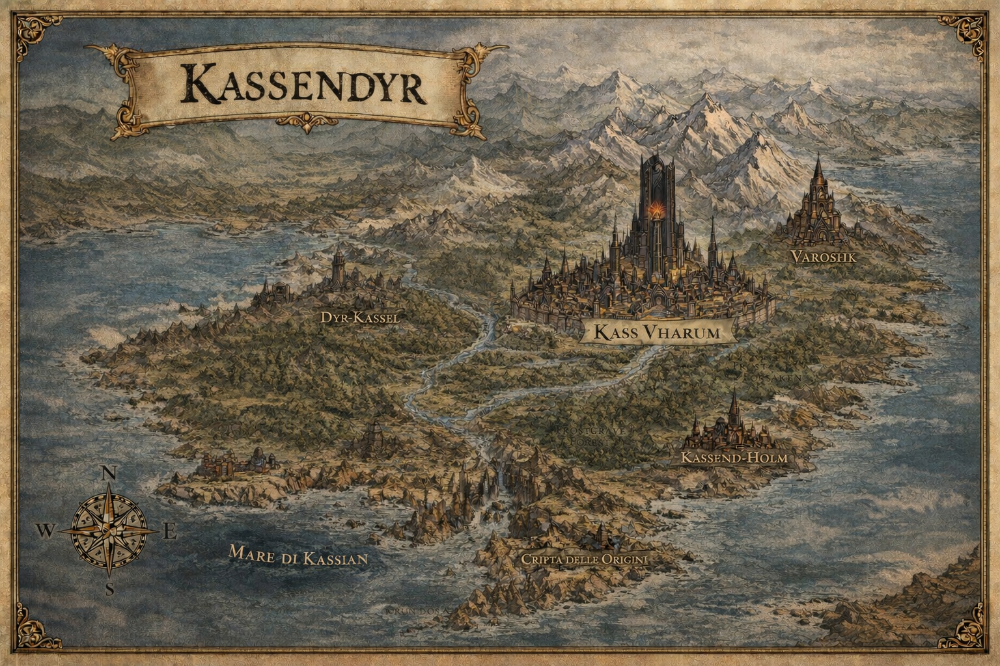
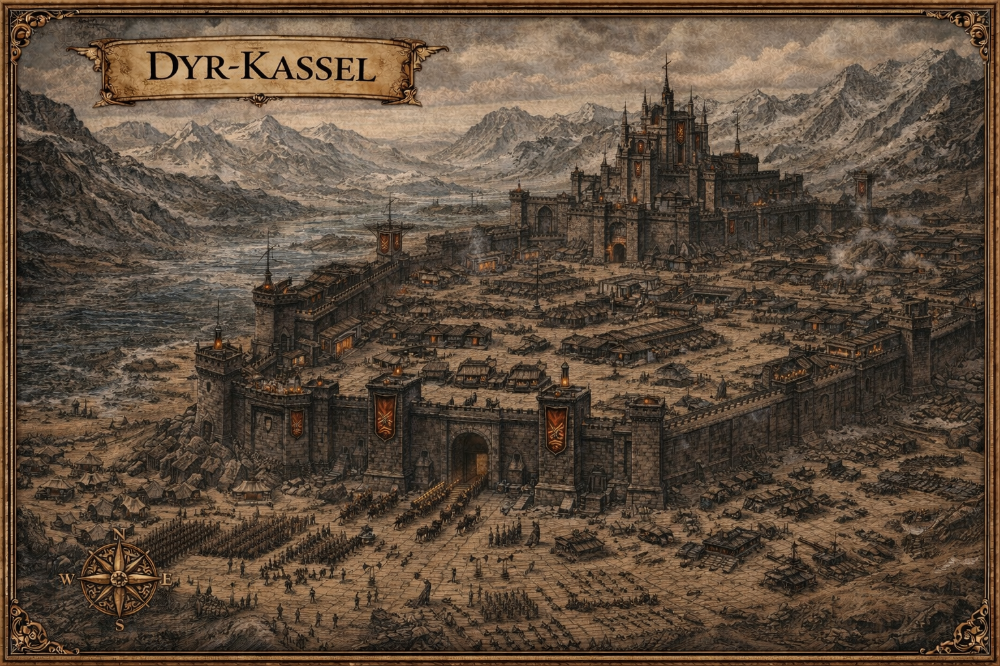
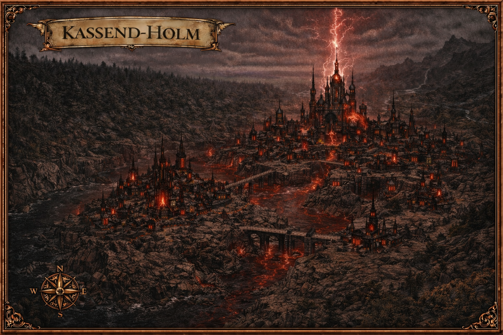
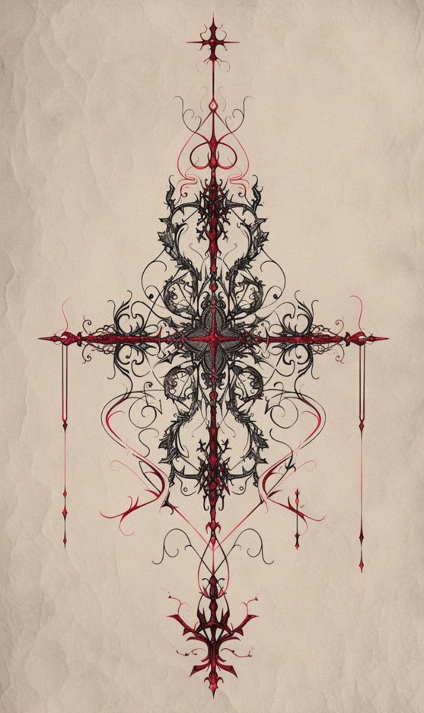

Kassendyr occupa la sezione sud ovest del Vecchio Continente, una regione fredda e aspra dove il mare domina l'orizzonte. È una nazione stabile, temuta e profondamente ordinata. Non è amata, ma è rispettata.
I suoi cittadini sanno che l'Imperatore è eterno, che l'Impero non cadrà per successione o tradimento, e che opporsi significa sfidare qualcosa che va oltre la semplice politica.
Al vertice di tutto vi è Zavash Kass, l'Imperatore del Sangue Persistente che comanda e detta leggi all'intero impero da ormai centinaia di anni pur essendo un semplice umano.
Non esiste successione. Non esiste interregno. Esiste solo Zavash Kass.

Kassendyr occupa la sezione sud ovest del Vecchio Continente, una regione fredda e aspra dove il mare domina l'orizzonte. Tre dei suoi confini sono lambiti da acque scure e gelide, spesso avvolte da nebbie perenni e tempeste improvvise.
Il quarto confine, a nord, è segnato da una catena di montagne frastagliate e da lande rocciose difficili da attraversare, che per secoli hanno isolato Kassendyr dal resto del continente.
Il clima è rigido, con inverni lunghi e taglienti e estati brevi, mai veramente miti. Le coste sono spezzate da fiordi, scogliere nere e porti naturali profondi, mentre l'interno alterna altipiani battuti dal vento, foreste di conifere antiche e valli dove la vita si è adattata con ostinazione.
Questa durezza naturale ha forgiato un popolo abituato alla disciplina, alla resistenza e all'idea che sopravvivere sia già una forma di vittoria.
L'entroterra è punteggiato da numerosi villaggi, spesso piccoli e autosufficienti. L'Impero garantisce protezione, infrastrutture e ordine, chiedendo in cambio obbedienza assoluta e tributi regolari.
Molti villaggi sono costruiti attorno a fortezze minori o torri di sorveglianza. In alcune regioni, comunità intere sono composte da rami minori della stirpe di Kass, incaricate di custodire luoghi sacri o nodi rituali.

Nel cuore della regione costiera centrale sorge Kass Vharum, la capitale di Kassendyr e una delle più grandi città mai costruite nel Vecchio Continente. È un colosso di pietra scura e metallo, costruita a terrazze ascendenti che culminano in una vasta area centrale sopraelevata.
Incantesimi di interdizione, controllo climatico e sorveglianza arcana sono intrecciati nella sua struttura stessa.
Al centro della città si erge la Torre Imperitura, immensa e innaturalmente slanciata, visibile da decine di chilometri. Non è solo la dimora di Zavash Kass, ma il fulcro magico dell'intera nazione.
Da lì l'Imperatore alimenta le difese della capitale e coordina rituali su scala continentale.
La popolazione è enorme e stratificata: funzionari imperiali, militari, studiosi di magia, mercanti, artigiani e una vasta massa di lavoratori. La città non dorme mai del tutto, e la presenza costante dell'Imperatore è percepita come una pressione silenziosa, sempre presente.
Kassendyr non è una nazione centralizzata solo sulla capitale: l'Impero è costellato di città fortificate nate per svolgere funzioni precise.
Città-militare nel nord interno, costruita a ridosso delle montagne. Da qui partono le legioni che difendono il confine terrestre. Severa, quasi interamente dedicata alla guerra e alla logistica.
Principale porto imperiale, affacciato sul mare orientale. Da qui partono flotte militari e commerciali. Rigidamente controllata: nulla entra o esce senza il consenso imperiale.
Costruita su isole rocciose collegate da ponti e canali. Centro di studio arcano dove i rituali minori legati alla stirpe di Kass vengono perfezionati in estremo segreto.


Acque scure e profonde, navi scomparse, correnti anomale e creature sconosciute. Alcuni sostengono che Zavash Kass abbia deliberatamente alterato il mare con rituali antichi.
Boschi antichi avvolti da penombra, dove la magia reagisce in modo imprevedibile. Terre proibite, eppure essenziali per rituali e risorse rare.
Enormi spaccature nella roccia che si estendono fino al mare. Luoghi di grande instabilità magica, create durante i primi esperimenti di Zavash Kass sulla lichificazione.
Posizione conosciuta solo da pochi. Non una tomba, ma un santuario arcano dove la stirpe di Kass viene studiata e preservata.


Con l'ausilio di un simulacro speciale, Zavash continua a governare l'Impero anche durante la sua assenza. Il simulacro dispone di varie strategie difensive il cui culmine è una magia di richiamo per il vero Zavash, attivata in caso di malfunzionamenti o distruzione.
L'imperatore è così sicuro di poter continuare nella sua ricerca per diventare una vera divinità.
La probabile immortalità di Zavash non è mai stata il traguardo finale. È la condizione necessaria per qualcosa di più grande: l'ascensione divina. Non per essere venerato, ma per imporre un ordine assoluto alla realtà stessa.
Un dio non governa attraverso eserciti o leggi. Governa attraverso le regole dell'esistenza. Il nuovo continente rappresenta per Zavash un laboratorio perfetto.
L'unica cosa che Zavash Kass non può permettersi è perdere il controllo sul proprio sangue — perché proprio il sangue è la sua anima.
